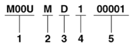

LEMON Manuals
: Even more car manuals for everyone: 1960-2025
Home
>>
Hyundai
>>
2022
>>
Elantra N Line, Standard Trans
>>
Repair and Diagnosis (Single Page)
>>
General Information
>>
OEM General Information
>>
General Information (Except HEV)
>>
Identification Numbers
>>
General Information
>>
Identification Number Description
>>
Transaxle Number
>>
Double Clutch Transmission (D7UF1-2)
Double Clutch Transmission (D7UF1-2)

Courtesy of HYUNDAI MOTOR AMERICA
Assembly code
Production year
M: 2021, N: 2022, P: 2023, R: 2024.....
Plant ofproduction
D: Hyundai Dymos
Month of production
1 - 9: 1 - 9 month
A-C: 10-12 month
Transaxle production sequence number
00001 - 99999